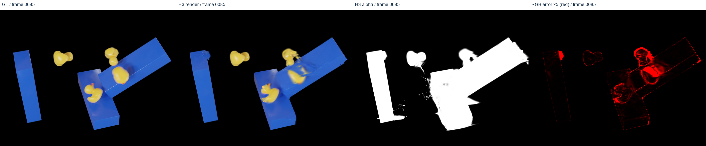
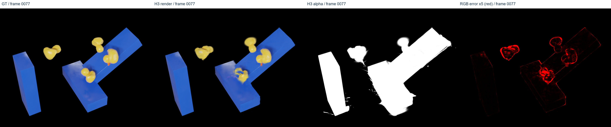
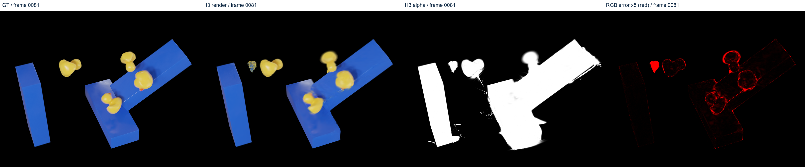
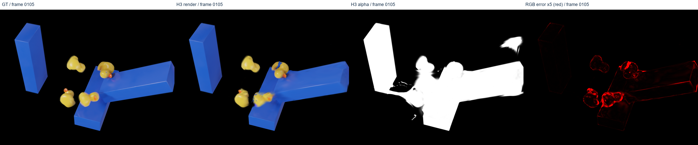
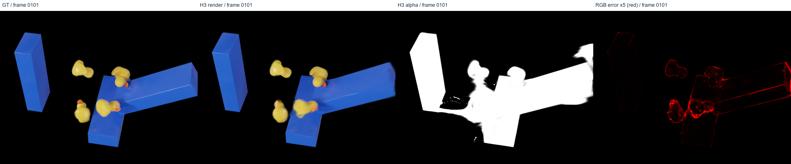
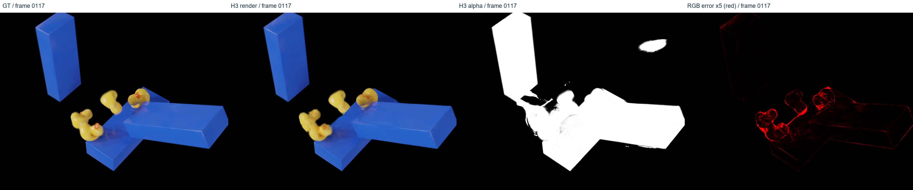
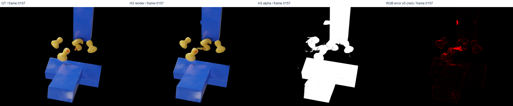

GT | H3 | alpha | RGB error
Exposed test frames: diagnosis only. Fixed crop x300-1200,y150-850.
Frame 85 | PSNR 30.627

Frame 77 | PSNR 33.141

Frame 81 | PSNR 34.427

Frame 105 | PSNR 35.572

Frame 101 | PSNR 37.085

Frame 117 | PSNR 37.179

Frame 157 | PSNR 37.318
